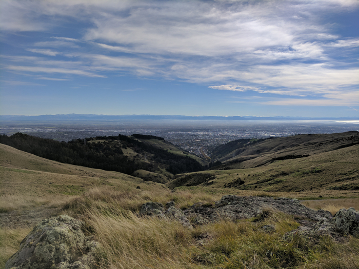

Port Hills
Christchurch Tourist Location
Christchurch's Scenic Hillside Landscape!
The Port Hills are a range of hills located between
Christchurch and Lyttelton Harbour. Formed by ancient
volcanic activity, the hills are known for their
spectacular views, walking tracks, native vegetation,
and unique natural landscape.
Visitors can explore the many walking and cycling tracks
throughout the Port Hills and enjoy views across
Christchurch, Lyttelton Harbour, and the surrounding
coastline. The area is also a popular place for
photography, hiking, mountain biking, and sightseeing.
The Port Hills are a great destination for visitors who
want to experience New Zealand's scenery without
travelling far from Christchurch city. Many areas are
free to access, making the Port Hills an affordable
activity for travellers. Visitors should consider
transport and food costs when planning their visit.
Facts:
- Located between Christchurch and Lyttelton Harbour
- Formed by ancient volcanic activity
- Offers views across Christchurch and the coastline
- Contains numerous walking and cycling tracks
- Popular for hiking and mountain biking
- Great location for photography
- Home to native plants and wildlife
- Many areas are free to access
Costs:
- Access to the Port Hills: Free
- Walking and sightseeing: Free
- Estimated food costs: $10-$30 per person
- Estimated transport costs: $5-$20
- Bike hire, if required: approximately $30-$70
- Estimated basic visit cost: $15-$50 per person